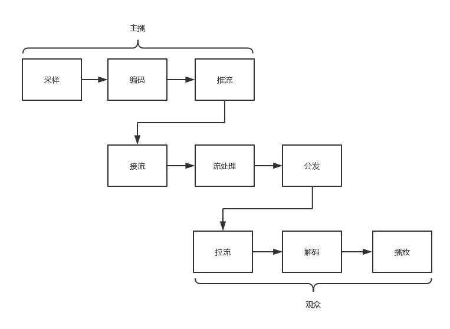
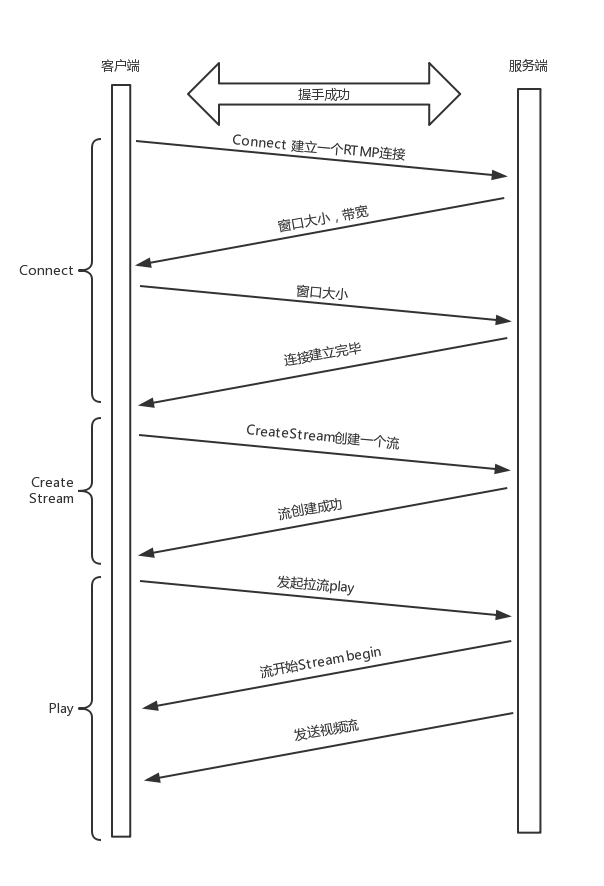

1. 视频压缩#
网络直播,视频压缩是一个很关键的技术，因为假设每一张图片大小为1024 * 768，每个像素由RGB组成，其中每个占8位，共24位。那么每秒钟的视频大小为：
30帧 x 1024 x 768 x 24 = 70,778,880 Bytes
如果一分钟的视频，就已经是4个G了。
解决的方式是编码，通过对图片的压缩，使播放的时候画面看起来仍然足够精美。
1.1 视频和图片压缩过程特征#
1.1.1 空间冗余#
图像的相邻像素之间有较强的相关性，一张图片相邻像素往往是渐变的，不是突变的，没必要每个像素都完整地保存，可以隔几个保存一个，中间的用算法计算出来。
1.1.2 时间冗余#
视频序列的相邻图像之间内容相似。一个视频中连续出现的图片也不是突变的，可以根据已有的图片进行预测和推断。
1.1.3 视觉冗余#
人的视觉系统对某些细节不敏感，因此不会每一个细节都注意到，可以允许丢失一些数据。
1.1.4 编码冗余#
不同像素值出现的概率不同，概率高的用的字节少，概率低的用的字节多
整个压缩过程如下图所示：

1.2 视频编码的两大种类/ 流派#
1.2.1 ITU International Telecommunications Union#
VCEG(Video Conding Experts Group),视频编码，侧重于传输
1.2.2 ISO International Standards Organization#
MPEG(Moving Picture Experts Group)，视频存储
1.2 网络直播#
网络协议将编码好的视频流，从主播端推送到服务器，在服务器上有个运行了同样协议的服务端来接收这些网络包，从而得到里面的视频流。
服务端接到视频流以后，对视频流进行转码，保证用各种客户端都能看到直播。
如果有非常多的观众，同时看一个视频直播，都从一个服务器上拉流，压力太大了，因而需要一个视频的分发网络，将视频预先加载到就近的边缘节点，来降低服务器的压力。

1.3 视频图片压缩过程详解#
1.3.1 编码#
会将视频序列分为三种帧，来分别进行压缩行为：
- I 帧
也称关键帧。里面是完整的图片，只需要本帧数据，就可以完成解码。
- P 帧
前向预测编码帧。P 帧表示的是这一帧跟之前的一个关键帧（或 P 帧）的差别，解码时需要用之前缓存的画面，叠加上和本帧定义的差别，生成最终画面。
- B 帧
双向预测内插编码帧。B 帧记录的是本帧与前后帧的差别。要解码 B 帧，不仅要取得之前的缓存画面，还要解码之后的画面，通过前后画面的数据与本帧数据的叠加，取得最终的画面。
可以看出，I 帧最完整，B 帧压缩率最高，而压缩后帧的序列，应该是在 IBBP 的间隔出现的。这就是通过时序进行编码

在一帧中，分成多个片，每个片中分成多个宏块，每个宏块分成多个子块，这样将一张大的图分解成一个个小块，可以方便进行空间上的编码。
帧 -> 片 -> 宏块 -> 子块
编码后的整个序列是要压缩为一个二进制流在网络上传播的，因此需要分割成一个个网络提取单元(NALU, network abstraction layer unit).

每一个 NALU 首先是一个起始标识符，用于标识 NALU 之间的间隔；然后是 NALU 的头，里面主要配置了 NALU 的类型；最终 Payload 里面是 NALU 承载的数据。
在 NALU 头里面，主要的内容是类型NAL Type.
- 0x07 表示 SPS，是序列参数集， 包括一个图像序列的所有信息，如图像尺寸、视频格式等。
- 0x08 表示 PPS，是图像参数集，包括一个图像的所有分片的所有相关信息，包括图像类型、序列号等。
- 在传输视频流之前，必须要传输这两类参数，不然无法解码。为了保证容错性，每一个 I 帧前面，都会传一遍这两个参数集合。
如果 NALU Header 里面的表示类型是 SPS 或者 PPS，则 Payload 中就是真正的参数集的内容。
如果类型是帧，则 Payload 中才是正的视频数据，当然也是一帧一帧存放的，前面说了，一帧的内容还是挺多的，因而每一个 NALU 里面保存的是一片。对于每一片，到底是 I 帧，还是 P 帧，还是 B 帧，在片结构里面也有个 Header，这里面有个类型，然后是片的内容。
一个视频，可以拆分成一系列的帧，每一帧拆分成一系列的片，每一片都放在一个 NALU 里面，NALU 之间都是通过特殊的起始标识符分隔，在每一个 I 帧的第一片前面，要插入单独保存 SPS 和 PPS 的 NALU，最终形成一个长长的 NALU 序列
1.3.2 推流#
需要将这个二进制流打包成网络包进行发送，一般使用RTMP协议。
RTMP协议是基于TCP的，因此肯定需要双方建立一个TCP的连接。在有TCP的连接的基础上，还需要建立一个RTMP的连接，即在程序当中，需要调用RTMP类库的Connect函数显示创建一个连接。
RTMP需要单独一个连接的原因在于：双方需要互相知道版本号，时间戳(看时间戳的差值)
未来沟通这些事情，需要发送六条消息：客户端发送 C0、C1、 C2，服务器发送 S0、 S1、 S2。首先，客户端发送 C0 表示自己的版本号，不必等对方的回复，然后发送 C1 表示自己的时间戳。服务器只有在收到 C0 的时候，才能返回 S0，表明自己的版本号，如果版本不匹配，可以断开连接。
服务器发送完 S0 后，也不用等什么，就直接发送自己的时间戳 S1。客户端收到 S1 的时候，发一个知道了对方时间戳的 ACK C2。同理服务器收到 C1 的时候，发一个知道了对方时间戳的 ACK S2。
握手完成。

握手之后，双方需要互相传递一些控制信息，比如Chunk块的大小，窗口大小等。真正传输数据的时候，还是需要创建一个流Stream，然后通过这个Stream来推流publish。
推流的过程，就是将NALU放在message里面发送，称为RTMP Packet包。格式如下图所示：

发送的时候，去掉 NALU 的起始标识符。因为这部分对于 RTMP 协议来讲没有用。接下来，将 SPS 和 PPS 参数集封装成一个 RTMP 包发送，然后发送一个个片的 NALU。
RTMP 在收发数据的时候并不是以 Message 为单位的，而是把 Message 拆分成 Chunk 发送，而且必须在一个 Chunk 发送完成之后，才能开始发送下一个 Chunk。每个 Chunk 中都带有 Message ID，表示属于哪个 Message，接收端也会按照这个 ID 将 Chunk 组装成 Message。
前面连接的时候，设置的 Chunk 块大小就是指这个 Chunk。将大的消息变为小的块再发送，可以在低带宽的情况下，减少网络拥塞。
举一个分块的例子：
假设一个视频的消息长度为 307，但是 Chunk 大小约定为 128，于是会拆分为三个 Chunk。
第一个 Chunk 的 Type＝0，表示 Chunk 头是完整的；头里面 Timestamp 为 1000，总长度 Length 为 307，类型为 9，是个视频，Stream ID 为 12346，正文部分承担 128 个字节的 Data。
第二个 Chunk 也要发送 128 个字节，Chunk 头由于和第一个 Chunk 一样，因此采用 Chunk Type＝3，表示头一样就不再发送了。
第三个 Chunk 要发送的 Data 的长度为 307-128-128=51 个字节，还是采用 Type＝3。

这样数据就能源源不断到达流媒体服务器

这个时候，大量观看直播的观众就可以通过 RTMP 协议从流媒体服务器上拉取，但是这么多的用户量，都去同一个地方拉取，服务器压力会很大，而且用户分布在全国甚至全球，如果都去统一的一个地方下载，也会时延比较长，需要有分发网络。
分发网络分为中心和边缘两层。边缘层服务器部署在全国各地及横跨各大运营商里，和用户距离很近。中心层是流媒体服务集群，负责内容的转发。智能负载均衡系统，根据用户的地理位置信息，就近选择边缘服务器，为用户提供推 / 拉流服务。中心层也负责转码服务，例如，把 RTMP 协议的码流转换为 HLS 码流。

1.3.3 拉流#
观众的客户端通过RTMP拉流的过程：

2. P2P#
2.1 传输大文件的现有方式#
2.1.1 HTTP方式#
最简单的是通过HTTP进行下载，但是通过浏览器下载速度非常慢。
2.1.2 FTP方式#
还可以通过FTP，即文件传输协议，FTP通过两个TCP连接来传输一个文件。
- 控制连接
服务器以被动的方式，打开用于FTP的端口21，客户端则主动发起连接。该连接将命令从客户端传给服务器，并传回服务器的应答。
- 数据连接
每当一个文件在客户端与服务器之间传输时，就创建一个数据连接
FTP有两种工作模式
- 主动模式 PORT
客户端随机打开一个大于1024的端口N，向服务器的命令端口21发起连接，同时开放N+1端口监听，并向服务器发出 prot N+1的命令，由服务器从自己的数据端口20主动连接到客户端指定的数据端口N+1
- 被动模式 PASV
当开启一个FTP连接时，客户端打开两个任意的本地端口N（仍然需要大于1024）和N+1.第一个端口连接服务器的21端口，提交PASV命令。然后，服务器会开启一个任意的端口P（大于1024），返回”227 entering passive mode”信息，其中有FTP服务器开放的用来进行数据传输的端口。客户端收到信息获取端口号以后，会通过N+1号端口连接服务器的端口P，然后在两个端口之间进行数据传输。
2.2 P2P概念#
首先无论是HTTP的方式还是FTP的方式，都难以解决单一服务器的带宽压力的问题，因为它们使用的都是传统的客户端服务器方式。P2P是指peer-to-peer。资源开始并不集中地存储在某些设备上，而是分散地存储在多台设备上。
想要下载一个文件的时候，需要得到那些已经存在了文件的peer，并和这些peer之间建立点对点的连接，而不需要到中心服务器上，就可以就近下载文件。同时在做下载和上传。
2.3 种子(.torrent) 文件#
需要知道哪些peer有这些文件，因此需要用到种子，就是我们熟悉的.torrent文件。由两部分组成：分别是announce(tracker URL) 和文件信息
2.3.1 文件信息#
- info区
指定该中西有几个文件、文件有多长、目录结构，以及目录和文件的名字。
- name字段
指定顶层目录的名字
- 每个段的大小
BitTorrent协议把一个文件分成很多小段，然后分段下载。
- 段哈希值
将整个种子种，每个段的SHA-1哈希值拼在一起。
2.3.2 下载过程#
下载时，BT 客户端首先解析.torrent 文件，得到 tracker 地址，然后连接 tracker 服务器。tracker 服务器回应下载者的请求，将其他下载者（包括发布者）的 IP 提供给下载者。下载者再连接其他下载者，根据.torrent 文件，两者分别对方告知自己已经有的块，然后交换对方没有的数据。此时不需要其他服务器参与，并分散了单个线路上的数据流量，因此减轻了服务器的负担。
下载者每得到一个块，需要算出下载块的 Hash 验证码，并与.torrent 文件中的对比。如果一样，则说明块正确，不一样则需要重新下载这个块。这种规定是为了解决下载内容的准确性问题。
从这个过程也可以看出，这种方式特别依赖 tracker。tracker 需要收集下载者信息的服务器，并将此信息提供给其他下载者，使下载者们相互连接起来，传输数据。虽然下载的过程是非中心化的，但是加入这个 P2P 网络的时候，都需要借助 tracker 中心服务器，这个服务器是用来登记有哪些用户在请求哪些资源。
所以，这种工作方式有一个弊端，一旦 tracker 服务器出现故障或者线路遭到屏蔽，BT 工具就无法正常工作了。
2.4 去中心化网络(Distributed Hash Table)#
每个加入这个DHT网络的人都要负责存储这个网络里的资源信息和其它成员的联系信息，相当于所有人一起构成了一个庞大的分布式存储数据库。
2.4.1 Kademlia 协议#
任何一个BitTorrent启动之后，都有两个角色：一个是peer，监听一个TCP端口，用来上传和下载文件；另一个角色DHT node，监听一个UDP端口，通过这个角色，这个节点就可以加入到一个DHT网络当中。

在 DHT 网络里面，每一个 DHT node 都有一个 ID。这个 ID 是一个很长的串。每个 DHT node 都有责任掌握一些知识，也就是文件索引，即它应该知道某些文件时保存在哪些节点上的，这些信息就足够了，而它自己本身不一定就是保存这个文件的节点。
2.4.2 哈希值#
每个文件可以计算出一个哈希值，而DHT node的ID是和哈希值相同长度的串。
DHT 算法是这样规定的：如果一个文件计算出一个哈希值，则和这个哈希值一样的那个 DHT node，就有责任知道从哪里下载这个文件，即便它自己没保存这个文件。
当然不一定这么巧，总能找到和哈希值一模一样的，有可能一模一样的 DHT node 也下线了，所以 DHT 算法还规定：除了一模一样的那个 DHT node 应该知道，ID 和这个哈希值非常接近的 N 个 DHT node 也应该知道。
什么叫和哈希值接近呢？例如只修改了最后一位，就很接近；修改了倒数 2 位，也不远；修改了倒数 3 位，也可以接受。总之，凑齐了规定的 N 这个数就行。
在这种模式下，种子.torrent 文件里面就不再是 tracker 的地址了，而是一个 list 的 node 的地址，而所有这些 node 都是已经在 DHT 网络里面的。当然随着时间的推移，很可能有退出的，有下线的，但是我们假设，不会所有的都联系不上，总有一个能联系上。
node new 只要在种子里面找到一个 DHT node，就加入了网络。
node new 会计算文件 1 的哈希值，并根据这个哈希值了解到，和这个哈希值匹配，或者很接近的 node 上知道如何下载这个文件，例如计算出来的哈希值就是 node C。
但是 node new 不知道怎么联系上 node C，因为种子里面的 node 列表里面很可能没有 node C，但是它可以问，DHT 网络特别像一个社交网络，node new 只有去它能联系上的 node 问，你们知道不知道 node C 的联系方式呀？
在 DHT 网络中，每个 node 都保存了一定的联系方式，但是肯定没有 node 的所有联系方式。DHT 网络中，节点之间通过互相通信，也会交流联系方式，也会删除联系方式。
在 node C 上，告诉 node new，下载文件 1，要去 B、D、 F，于是 node new 选择和 node B 进行 peer 连接，开始下载，它一旦开始下载，自己本地也有文件 1 了，于是 node new 告诉 node C 以及和 node C 的 ID 很像的那些节点，我也有文件 1 了，可以加入那个文件拥有者列表了。
但是你会发现 node new 上没有文件索引，但是根据哈希算法，一定会有某些文件的哈希值是和 node new 的 ID 匹配上的。在 DHT 网络中，会有节点告诉它，你既然加入了咱们这个网络，你也有责任知道某些文件的下载地址。